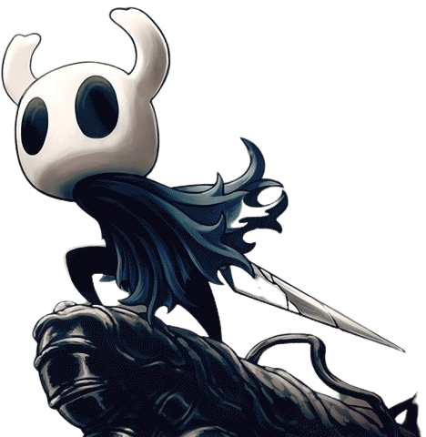
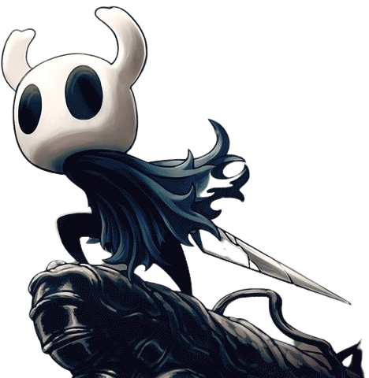

Antes del reino de Hallownest, había
una criatura todopoderosa, EL Destello, que a través de
su
luz
engendró a la tribu de las polillas. Entre todas, crearon el reino de Hallownest, un lugar
para
que
los insectos pudieran pasar sus vidas. Pronto llegaron insectos de todo tipo.
La tribu de
las
Mantis, un pueblo guerrero o la tribu de las Abejas, una sociedad jerarquizada, eran de las
muchas
especies que llegaron al nuevo reino, y aunque respetaban a Destello como máxima autoridad,
las
Mantis tenian su propio gobierno, y las abejas se encerraron en su colmena, ajenas a todo lo
que
pasara en Hallownest.
Todo era paz y armonía, o eso parecía...
 
